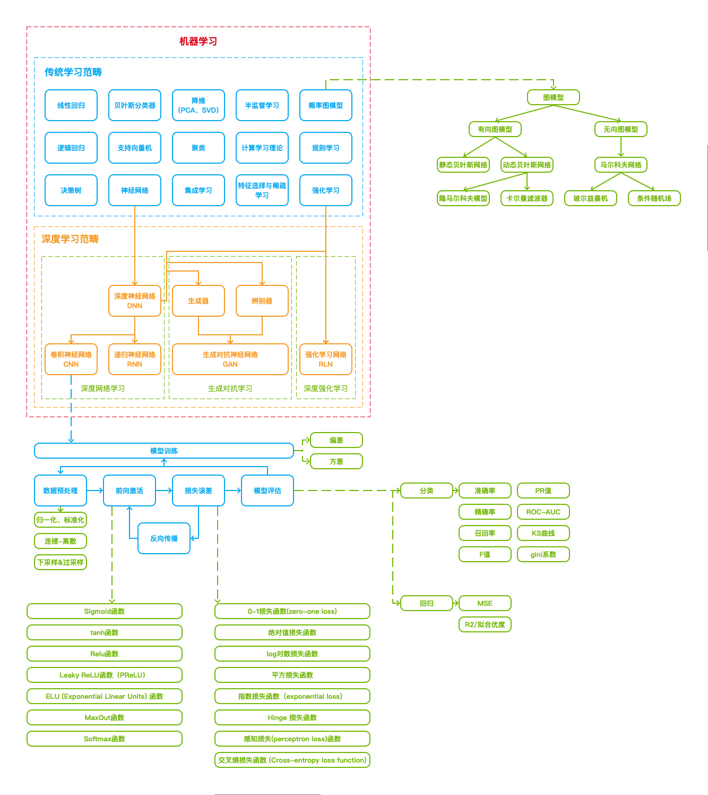

画一张图来帮助记忆机器学习相关知识
知识图谱

大类集合
深度学习
浅谈深度学习基础（上） - 简书
浅谈深度学习基础（下） - 简书
机器学习
浅谈机器学习基础（上） - 简书
浅谈机器学习基础（下） - 简书
团员分享产品视角的14种常见算法简单总结@haiqiao_20200210
NLP
团员分享_NLP相关Deep Learning模型小结_Lily_20190427
浅谈自然语言处理基础（上） - 简书
浅谈自然语言处理基础（中） - 简书
浅谈自然语言处理基础（下） - 简书
辅助算法
EM算法：
从最大似然到EM算法浅解_网络_zouxy09的专栏-CSDN博客
如何感性地理解EM算法？ - 简书
BP算法：
神经网络反向传播算法 - 知乎
损失函数：
常见的损失函数(loss function)总结 - 知乎
简单的交叉熵损失函数，你真的懂了吗？ - 知乎
机器学习面试之MSE与CE的区别？ - 简书
激活函数：
常用激活函数（激励函数）理解与总结_网络_StevenSun的博客空间-CSDN博客
详解softmax函数以及相关求导过程 - 知乎
word2vector：
机器学习必须熟悉的算法之word2vector（一） - 简书
机器学习必须熟悉的算法之word2vector（二） - 简书
Word Embedding：
Word Embedding与Word2Vec_Python_白马负金羁-CSDN博客
核方法：
核方法、核技巧和核函数 - 知乎
偏差方差：
机器学习面试之偏差方差 - 简书
归一化与标准化：
机器学习面试之归一化与标准化 - 简书
attention机制：
机器学习面试之Attention - 简书
AI模型
CRF模型：
最通俗易懂的BiLSTM-CRF模型中的CRF层介绍 - 知乎
最大熵模型：
机器学习面试之最大熵模型 - 简书
SVM算法：
机器学习面试之有必要手推SVM吗（1）？ - 简书
机器学习面试之有必要手推SVM吗(2)? - 简书
SMO算法：
用讲故事的办法帮你理解SMO算法 - 简书
梯度提升树：
数据挖掘面试题之梯度提升树 - 简书
梯度上升算法：
《机器学习实战》第五章梯度上升算法的直观理解 - 简书
生成模型、判别模型：
机器学习面试之生成模型VS判别模型 - 简书
LDA主题模型：
通俗理解LDA主题模型_网络_结构之法 算法之道-CSDN博客
带你理解beta分布_人工智能_Jie Qiao的专栏-CSDN博客
http://bloglxm.oss-cn-beijing.aliyuncs.com/lda-LDA数学八卦.pdf
LSTM：
机器学习面试之LSTM - 简书